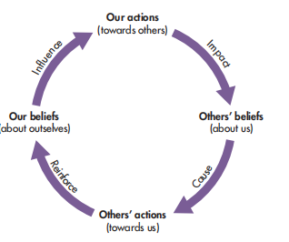
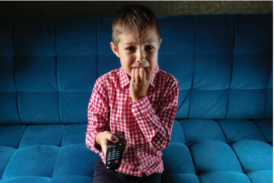
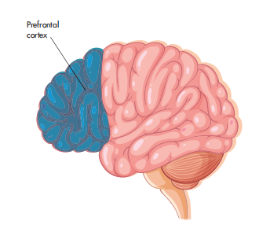

🚔 CHAPTER 7: EXPLANATIONS FOR CRIME AND ANTISOCIAL BEHAVIOUR
犯罪与反社会行为的解释
1. Learning Objectives（学习目标）
⚡ Quick Summary — 本节要学什么
Why do people commit crimes? Is it the label society pins on them, the violence they watch on a screen, or the way their brain is wired? This chapter builds three competing explanations（三种竞争性解释）— and by the end you will be able to argue for and against each one, exactly as the exam demands.
🎯 By the end of this chapter, you should be able to describe and evaluate (spec 6.1.1):
- Self-fulfilling prophecy（自证预言）as an explanation for antisocial/criminal behaviour — including the Rosenthal & Jacobson (1968) and Jahoda (1954) evidence.
- Social learning from the media（从媒体的社会学习）as an explanation — including Bandura Ross & Ross (1963), MacBeth Williams (1986) and Comstock & Paik (1994).
- Antisocial personality disorder（反社会人格障碍，ASPD）as an explanation — including Hodgins & Côté (1993), the twin-study evidence and Yang & Raine (2009).
2. Getting Started — Can a Name Make You a Criminal?（开局思考：一个名字能让人犯罪吗？）
⚡ Think about this before you read on
In a small group, list five different types of crime（五种不同类型的犯罪）. Now think of as many reasons as you can why people commit these crimes — you will have a long list. Which reason best explains which crime? There may be multiple reasons for one crime.
Explaining crime is difficult because of the large number of reasons why crimes are committed: some are social or economic（社会的或经济的）, some relate to mental disorders（精神障碍）, and others may be biological（生物的）. Criminal behaviour is challenging because it can be influenced by many factors.
🤔 The question we will answer in §5：In Ghana, some boys are named after the day of the week they were born on. Boys born on Wednesday are named Kwadu and are expected to be aggressive and short-tempered（好斗、急躁）. When researchers checked juvenile court records, they found that about 22 per cent of violent offences were committed by Wednesday-born boys — but only 6.9 per cent by Monday-born boys（被期望「安静平和」）.
Same country. Same courts. Only the expectation attached to their names was different. Keep that number in your head as you read.
3. Criminal and Antisocial Behaviour（犯罪行为与反社会行为）
| Criminal behaviour（犯罪行为） | Antisocial behaviour（反社会行为） | |
|---|---|---|
| Definition | You break the law（违反法律）. | Acting in a way that causes harassment, alarm or distress（骚扰、恐慌或困扰）to others — not in itself illegal（本身并不违法）. |
| Examples | Theft, assault, fraud. | Being excessively noisy, not controlling animals, intimidating others, making hoax calls. |
| Consequence (UK) | Prosecution（起诉）. | An antisocial behaviour order（反社会行为令，ASBO）listing what you cannot do; violating it can lead to prosecution. |
The terms 'antisocial' and 'criminal' have different meanings but are often used interchangeably（经常被混用）. Psychologists aim to understand the circumstances of the individual on an individual basis（在个体层面上）, what changes need to be made for that person, and then look for patterns more prevalent among the offending population（在犯罪人群中更普遍的规律）.
4. Theory 1 · Self-Fulfilling Prophecy（自证预言）
KEY TERM — self-fulfilling prophecy（自证预言）：a theory that explains that a behaviour may result from a belief or expectation someone has. This expectation influences a person's behaviour in such a way that it causes the expectation to come true（期待最终自我实现）.
How it works as a process（四步过程）：Self-fulfilling prophecy can best be described as a process. Initially a false expectation is believed about a person, so they are labelled（被贴标签）as being a particular type of person. The person is treated differently（被区别对待）according to the expectation/label. Any behaviour inconsistent with the expectation is ignored（与期待不符的行为被忽视）, and the person begins to internalise the label（把标签内化）they have been given — and eventually acts in a way consistent with that label: they fulfil the prophecy that has been set.

In the context of criminal behaviour（放到犯罪情境里）：a person may be falsely labelled as criminal or antisocial. People around them then treat them with suspicion or caution（怀疑与戒备）, ignoring good behaviour that is not consistent with the criminal label. Being treated differently may lead to the labelled individual being isolated from normal society（被正常社会孤立）and so they may be drawn into criminal groups（被拉进犯罪团伙）. The person begins to internalise this label and cause trouble because it is expected of them. Once they have committed an offence they have confirmed the expectation and become a criminal.
🌈 Wider Issues and Debates — Nature–nurture（天性 vs 教养）
Self-fulfilling prophecy is a theory of criminality that emphasises environmental factors（环境因素）: people become antisocial/criminal because of the way people treat them. For example, a child from an antisocial family may be expected to engage in criminal behaviour and treated accordingly. This suggests upbringing can influence criminality. However, the theory ignores innate influences（忽视先天因素）, such as biological reasons for criminality like brain functioning or genetics.
5. SFP Evidence — Two Classic Studies（两大证据研究）
Rosenthal & Jacobson (1968) — the "Bloomers" study
What they did：Robert Rosenthal and Lenore Jacobson's study explained the impact of self-fulfilling prophecy within an academic setting in San Francisco, USA. They wanted to find out if teachers would react differently to particular students. Some students were labelled as academic 'bloomers'（学术上的「快开之花」）with great potential. In fact, students were allocated to this group randomly（随机分配，并非真的按智商挑的）, not according to their level of intelligence.
What they found：The study ran for a year, measuring IQ at the start and end. The IQ of students identified as 'bloomers' was significantly higher than the non-bloomers — despite the bloomers not necessarily being those with the highest IQ scores at the start. They concluded that teachers' expectations influenced their behaviour towards students, and it was this behaviour that influenced the change in IQ scores. The beliefs of teachers became self-fulfilling truth.
Gustav Jahoda (1954) — the Ashanti day-names study
What he did：Gustav Jahoda (1954) provided support for the self-fulfilling prophecy and the application of labels to children in relation to antisocial behaviour. He studied the Ashanti people from Ghana, who name boys according to the day they were born. The Ashanti have expectations for the personality of boys born on each day: 'Monday' boys are considered quiet and placid（安静温和）, and 'Wednesday' boys are thought to be aggressive and short-tempered（好斗急躁）.
What he found：After looking at five years of records at a local juvenile court（少管所法庭 5 年记录）, Jahoda found that nearly 22 per cent of violent offences were committed by boys born on Wednesday, but only 6.9 per cent by boys born on Monday. This suggested that cultural expectations about the boys' natures and the explicit labels led to them being treated differently according to their day of birth (for example, the boys born on Wednesday would have been treated with greater suspicion). As a result, many conformed to the label set by their namesake.
✅ That is the answer to the §2 teaser — the 22% vs 6.9% gap is Jahoda's evidence that labels attached to a name can bend real behaviour towards the expectation.
🎂 Experience it · 如果你出生在加纳，你的名字会是什么「人设」？ 亲身体验
Jahoda 研究里，加纳 Ashanti 族按出生星期给孩子起名，名字自带一套「人格期待」。选你的出生星期，看看如果你出生在加纳，你会被起什么名字、被贴上什么标签——以及这个标签在 Jahoda 的犯罪数据里意味着什么。
6. Evaluating Self-Fulfilling Prophecy（评价自证预言）
Read like a critic — every point below comes from the research itself, and each card tells you WHY it matters.
| Evaluation point | The evidence | Why it matters |
|---|---|---|
| Ethical problems with the supporting study | The Rosenthal & Jacobson (1968) study was well controlled and helpful in explaining learning processes, but it was unethical — it allowed some students to receive less attention than others, interfering with their education. The teachers were also deceived about details of the study. | You can still use the study as evidence, but a balanced answer flags the cost: some children's education was compromised to prove the point. |
| No proven direct link to criminality | There is no proven direct link between an individual's IQ levels (Rosenthal and Jacobson, 1968) and criminality. The research is limited to self-fulfilling prophecy and crime, with the exception of Jahoda (1954). | The strongest evidence is about school grades, not crime. One juvenile-court study carries the whole criminal claim — a thin evidence base. |
| Ethics forbid experiments → correlation only | The ethical and moral issues surrounding research into self-fulfilling prophecy and antisocial behaviour are so great that it prevents experiments — it would be unlikely that intentionally labelling children to cause antisocial behaviour could be proven (or disproven). As a result it is only possible to suggest a correlation（只能证明相关，不能证明因果）. | Correlation cannot rule out other variables influencing behaviour — so causation is always an assumption, never a demonstration. |
| Evidence comes from education, not crime | Much of the research has been in education, investigating the teacher–child relationship. Other relationships may not have the same effect. This makes the application of self-fulfilling prophecy to other behaviours such as criminality difficult. | Generalisability gap: what teachers do to pupils may not match what police, courts and neighbours do to labelled 'criminals'. |
| False beliefs are hard to study | It is also very difficult to study self-fulfilling prophecy because it is by definition a false belief. Beliefs are often studied using self-report measures, which rely on individual insight, self-disclosure and honesty. | If people don't know (or won't admit) their expectations, the core mechanism is hard to measure objectively. |
| Ignores other explanations (reductionist in scope) | All research demonstrates a correlation between antisocial behaviour and self-fulfilling prophecy, so the link cannot be accepted as causal as other variables may also influence behaviour, including biological factors such as brain functioning or genetics. Self-fulfilling prophecy fails to account for other factors: peer pressure, politics, biological factors and social or economic circumstances. | The theory is too narrow on its own — a complete explanation of crime needs these other pieces (which is exactly where SLT and ASPD come in, §7 and §10). |
7. Theory 2 · Social Learning from the Media（从媒体的社会学习）
KEY TERM — social learning theory（社会学习理论）：a social-cognitive theory（社会认知理论）that explains criminal behaviour as being the result of modelling such behaviour from observing it via the media or watching other people.
KEY TERM — vicarious（替代的/间接的）：learning through the consequence of another person's behaviour.
Social learning theory suggests that an individual cannot learn offending behaviour without observing someone commit a crime, either directly such as a peer, or indirectly through watching crime-related television programmes. The individual may be motivated to reproduce the observed behaviour, which occurs as a result of vicarious reinforcement（替代强化——看到别人干坏事得了好处）. If an individual watches a criminal getting away with an offence or reaping the rewards, this may act as vicarious reinforcement for the observer.
On television, antisocial behaviour and criminality are often glamorised（被美化）, and violence can be committed by 'good guys'. Criminal characters from media may act as role models（榜样）as they are often people who have power, or they may be the same gender as us. These role models may provide vicarious reinforcement, particularly in the absence of punishment and with only the sanitised effects on the victims shown（受害者的痛苦被淡化处理）.
Social learning theory also highlights the importance of cognitive thinking processes（认知加工过程）of a person, as someone may choose not to commit a crime immediately after observing it: the behaviour can happen much later. If news or crime programmes document some of the negative consequences of committing an offence, this may work towards encouraging an individual not to try the offence to seek a positive outcome.
✍️ Activity 1 — Apply the key terms to stealing（课本 Activity 1）
Social learning theory is a topic you will have studied before. It is important in the examination that you apply social learning theory to criminal and antisocial behaviour. Use as a concrete example: a teenager observed a friend shoplifting from a store. Fill in what each key term would look like in this example, then open the panel to check.
| Key term | Definition | Applying the key term to explain stealing |
|---|---|---|
| Attention | Observing someone perform a behaviour | Example given: A teenager observed a friend shoplifting from a store. |
| Retention | Remembering the behaviour | Your turn — remembering how the friend did it. |
| Role model | Someone we look up to who may be of higher status and the same gender | Your turn — why the friend (not a stranger) matters here. |
| Reproduction | Copying the behaviour witnessed | Your turn — the teenager later steals too. |
| Vicarious reinforcement | Witnessing the role model receive a reward for a behaviour | Your turn — the friend got away with it / got cool items. |
8. SLT Evidence — From Bobo Dolls to Whole Communities（从波波玩偶到整个社区）
Bandura, Ross & Ross (1963) — Bobo doll + cartoon cat
Studies into the portrayal of violence in the media have adopted a range of research methods to investigate its effects. Albert Bandura, Dorthea Ross and Sheila Ross (1963) found experimental evidence that children copied aggression from watching a video recording of adults behaving aggressively towards a Bobo doll（充气不倒翁玩偶）.
They also found that children were equally likely to copy aggression from a cartoon version where the aggressive adult was dressed as a black cat. This study offers evidence that children copy antisocial behaviour from television, although the long-term impact of witnessing aggression was not followed up, so we do not know whether the children developed antisocial behaviour beyond the experimental context.
Tannis MacBeth Williams (1986) — the town that got TV
Tannis MacBeth Williams (1986) used a natural experiment（自然实验）to investigate the introduction of television to a small community in British Columbia, Canada. Of the 16 young people that she studied, she found that after only two years of receiving television, these children were twice as aggressive as two control groups she studied in nearby communities who had been brought up with television in varying amounts.
This might offer some evidence for social learning theory as an explanation of criminality, although Williams herself suggested that the increased aggression was more likely to be a result of the increased value placed on materialistic lifestyles than the violence that they were exposed to in television programmes.
Comstock & Paik (1994) — a meta-analysis with a weak correlation
Correlations have also been conducted to establish whether there is a relationship between watching violent media and aggressive behaviour. In a meta-analysis of correlational studies, George Comstock and Haejung Paik (1994) concluded that many reported a positive correlation between television violence and aggressive measures of behaviour, with an overall correlation coefficient of +0.19. This correlation is not particularly strong and is significantly affected by the large sample sizes used in some of the studies, which tend to make findings appear significant when they are not.

9. Evaluating Social Learning Theory（评价社会学习理论）
Read like a critic — the conclusion the textbook draws is surprisingly cautious.
| Evaluation point | The evidence | Why it matters |
|---|---|---|
| Long-term effects unknown | Bandura's evidence that children copy aggression from television is powerful, but the long-term impact of witnessing aggression was not followed up — we do not know whether the children developed antisocial behaviour beyond the experimental context. | Copying a bobo-doll punch in a lab is a long way from a criminal career. Short-term imitation ≠ long-term criminality. |
| The natural experiment has a confounding variable | Williams herself suggested the increased aggression in the TV town was more likely a result of the increased value placed on materialistic lifestyles than of the violence in programmes. | Even the best natural experiment cannot isolate the variable — a third factor may explain the whole effect. |
| The correlation is weak and inflated | The overall correlation coefficient of +0.19 (Comstock & Paik, 1994) is not particularly strong and is significantly affected by large sample sizes, which tend to make findings appear significant when they are not. Correlations only show relationships between measured variables: they do not establish causality, measure other variables that could affect aggression, nor indicate the direction of possible causality. | +0.19 leaves 96% of the variance unexplained. And direction could be reversed — see next point. |
| The causation may run backwards | It could be that aggressive children seek out and prefer violent programmes（是爱攻击的孩子主动选择看暴力节目）— the direction of cause and effect is unknown. | The media may reflect pre-existing aggression rather than create it. |
| Third variables explain criminality better | There may be the influence of a third, unmeasured variable, such as social class. Children from lower socio-economic status watch delinquent（倾向于违法的）television more than those in higher socio-economic groups, and are also more likely to be delinquent (Flood-Page et al., 2000). Other factors such as individual motivation, personality characteristics such as sensation seeking（寻求刺激）(Slater et al., 2004) and antisocial personality disorder may also account for criminality. | Social class, sensation seeking and ASPD could each produce both the TV habits and the behaviour — media is the bystander, not the cause. |
| The overall conclusion is cautious | What can we conclude from the research into social learning theory and antisocial behaviour? That there is no convincing evidence that criminality is a result of observational learning, particularly as a result of observing media portrayals of violence. Despite a phenomenal amount of research conducted using a range of research methods, there is no unequivocal evidence that links exposure to violence with aggression or antisocial behaviour. The relationship is neither simple nor straightforward. | In an essay, this balanced verdict is your AO3 conclusion: the theory is plausible but the evidence base does not yet prove it. |
10. Theory 3 · Antisocial Personality Disorder（反社会人格障碍，ASPD）
KEY TERM — personality disorder（人格障碍）：when an individual's way of thinking, feeling or relating to others differs significantly from that of a person without a personality disorder. It reflects extremes in people's personalities. A personality disorder requires a clinical diagnosis（临床诊断）.
KEY TERM — comorbidity（共病）：the presence of more than one disorder in the same person.
Antisocial personality disorder (ASPD) can be diagnosed through official classifications such as the Diagnostic and Statistical Manual of Mental Disorders (DSM-V) and the International Statistical Classification of Diseases and Related Health Problems (ICD-11) — the same classification systems you met in Topic H. ASPD, sometimes referred to as dysocial personality disorder, is characterised by a persistent disregard for the rights of others（持续无视他人权利）.
📋 The seven diagnostic characteristics — a diagnosis requires three or more:
- Disregard for social rules or respect for lawful behaviour, e.g. harassment, stealing
- Deceit and manipulation: lying, using aliases, conning others for personal or financial gain
- Impulsivity or failing to plan ahead
- Aggression and irritability, e.g. getting into fights
- Reckless disregard for their own or other people's safety, e.g. reckless driving
- Irresponsible behaviour, such as failing to honour work or financial obligations
- Lack of remorse for wrongdoing or harm（对伤害毫无悔意）
✍️ Activity 2 — Link behaviours to a characteristic（课本 Activity 2）
Link each behaviour below to a characteristic of antisocial personality disorder:
- Tamara screams aggressively at the neighbours every time they walk by her house
- Sanya plays her music very loudly and insults people when they ask her to turn it down
- Demi steals money from her mother's purse
- Ruthie lies to her teachers
- Lola regularly fails to show up for work
The four categories of offences（ASPD 患者的四类罪行）：People with antisocial personality disorder tend to commit one of four categories of offences:
- Aggression towards people or animals
- Property offences（毁坏财物）
- Theft or deceit
- Serious violation of rules（严重违规）
People with ASPD are likely to get into trouble or be arrested because they fail to respect lawful behaviour. They may get involved in fights or assault another person and tend to disregard personal safety or the safety of others. They may also display indifference in harming or mistreating other people. Although ASPD is not diagnosed until the age of 18 years, evidence of conduct issues should be seen before the age of 15（15 岁前须有人品行为问题的证据）.
Other features of ASPD can include displays of arrogance, being superficially charming（表面魅力十足）, being exploitative（善于利用他人）and failing to properly care for children. The prevalence rate for ASPD is between 1 and 4 per cent of the general population (Lenzenweger et al., 2007), although this is significantly higher in subgroups of the population (males with substance abuse in clinics or prison). It is much more common in males compared to females, but is thought to be under-diagnosed in females due to the emphasis on aggressive characteristics necessary for diagnosis. Individuals with ASPD may also suffer from other conditions, such as anxiety or depressive disorders, substance misuse or attention deficit/hyperactivity disorder (ADHD) — a comorbidity problem.
While an individual with ASPD has a higher risk of criminality, their offending should not be used to diagnose the disorder. To be clinically diagnosed, an individual should display antisocial characteristics which are inflexible, persistent and cause significant impairment in functioning or cause distress.
🩺 Play psychiatrist · 你是精神科医生，给两位「病人」下诊断 亲身体验
用 DSM 的 7 条特征给下面两个病例做评估。记住两条硬门槛：①至少 3 条特征；②18 岁前不诊断，但必须有 15 岁前的行为问题（conduct issues）证据。勾选你观察到的特征，点「诊断」看结果。
11. ASPD Evidence — From Childhood Records to Brain Scans（从童年记录到脑扫描）
Hodgins & Côté (1993) — ASPD predicts offending careers
Shelly Hodgins and Gilles Côté (1993) investigated the link between mental disorders and offending by comparing offenders with antisocial personality disorder and those without. They found that offenders with a diagnosis of ASPD had a significant history of offending during childhood, and more convictions in adulthood than offenders who did not have ASPD. This research suggests that the disorder leads to a strong risk of offending.
The genetic case — Torgersen (2008), Mason & Frick (1994), Ferguson (2010)
The cause of ASPD is still debated; however there is evidence for a genetic basis which comes from twin studies（双生子研究——比较同卵双生子与异卵双生子的相似度）:
- Sven Torgersen et al. (2008) assessed the personality traits of 1386 twin pairs in a Norwegian sample using a structured interview. Comparing their traits to the DSM IV criteria, they found that genetic heritability accounted for 38 per cent of twin variation in antisocial personality traits.
- Dehryl Mason and Paul Frick (1994) describe 12 twin and three adoption studies which suggest that over 50 per cent of the variance in measures of antisocial behaviour were attributable to genetic factors.
- Christopher Ferguson (2010) analysed the data of 38 studies published between 1996 and 2006. Using a combined sample of 96,918 participants, he found that genetic factors accounted for 56 per cent of the variance in antisocial personality and behaviour. This offers credibility to the theory that criminality has a biological basis.
Yang & Raine (2009) — the prefrontal cortex story
Further biological evidence comes from brain imaging studies. Yaling Yang and Adrian Raine (2009) conducted a meta-analysis on 43 brain scanning studies (including structural and functional brain scans) and found significantly reduced grey matter and reduced function in the prefrontal cortex for individuals displaying antisocial behaviour. The prefrontal cortex（前额叶皮层）is known to moderate aggression（调节攻击性）, so an impairment in this area may explain antisocial behaviour. It has been suggested that the prefrontal cortex impairment could have been inherited or acquired through brain damage. Other brain differences have been found including the amygdala and temporal lobe. This research further supports a biological basis for criminal and antisocial behaviour.

12. Evaluating ASPD（评价反社会人格障碍解释）
Read like a critic — the strongest biological explanation still has loose threads.
| Evaluation point | The evidence | Why it matters |
|---|---|---|
| Childhood roots: prediction and prevention | ASPD has its roots in childhood and cannot be formally diagnosed without evidence of antisocial behaviour before the age of 15. A longitudinal study by Emily Simonoff et al. (2004) provides credibility: they interviewed 225 childhood twin pairs diagnosed with conduct disorder（品行障碍）in childhood, which predicted antisocial personality disorder in adulthood in those who showed criminal behaviour 10–25 years later. This can have important implications for the identification of problem behaviour during childhood, and possible intervention programmes that could be used to prevent later criminal behaviour in adulthood. | Longitudinal prediction is the strongest design here: conduct disorder in childhood came before adult ASPD, supporting a developmental pathway. |
| Comorbidity makes diagnosis problematic | Investigating ASPD is complex, not least because diagnosis is problematic due to a high level of comorbidities that may exist. There are environmental factors also associated with ASPD, such as adverse childhood circumstances, low socio-economic class and urban living. While it could be that these factors contribute to the development of ASPD, it could instead be that this subgroup engages in protective behaviours or strategies which resemble antisocial personality disorder and therefore are misdiagnosed. | If environment can mimic the disorder, some diagnoses may be false positives — the label itself becomes unreliable. |
| Elevated risk, not inevitability | The risk of offending is significantly elevated in individuals with ASPD but it is not inevitable. Some people with ASPD may not commit criminal offences and can live functional lives in terms of employment and having relationships. The risk of offending varies with severity of symptoms, comorbid conditions like ADHD or substance misuse, and upbringing. | ASPD is a risk factor, not a destiny — an essay that treats it as deterministic loses the balance marks. |
| Heritability figures disagree | The genetic estimates vary: 38% of twin variation (Torgersen et al., 2008), over 50% (Mason & Frick, 1994), 56% (Ferguson, 2010). Even the highest figure leaves a substantial share to the environment. | Genes load the gun; they are not the whole trigger. An inherited tendency still needs environmental conditions to be expressed. |
| Brain evidence is correlational | Yang and Raine's meta-analysis shows reduced grey matter associated with antisocial behaviour, but reduced prefrontal function could be inherited or acquired through brain damage — and scanning studies cannot show whether the brain difference caused the behaviour or resulted from lifestyle factors. | Causation remains open. Correlation between a brain feature and behaviour is not proof of mechanism. |
13. The Three Theories Side by Side（三大理论对比速查）
| Self-fulfilling prophecy（自证预言） | Social learning from media（媒体社会学习） | ASPD（反社会人格障碍） | |
|---|---|---|---|
| Type of explanation | Social / environmental（社会标签） | Social-cognitive（观察学习） | Personality / biological（人格与生理） |
| Core mechanism | False expectation → labelled → treated differently → internalise → fulfil the label | Observe (media/peer) → vicarious reinforcement → reproduce, maybe much later | Persistent disregard for others' rights; 3+ of 7 characteristics; conduct issues before 15 |
| Key evidence | Rosenthal & Jacobson (1968) bloomers; Jahoda (1954) 22% vs 6.9% | Bandura Ross & Ross (1963); Williams (1986) TV town; Comstock & Paik (1994) r = +0.19 | Hodgins & Côté (1993); Torgersen 38% / Ferguson 56%; Yang & Raine (2009) 43 scans |
| Biggest weakness | No direct IQ–crime link; ethics forbid experiments → correlation only | No convincing evidence of causation; third variables (class, sensation seeking, ASPD) | Comorbidity and misdiagnosis; risk elevated but not inevitable |
| Nature–nurture stance | Strong nurture（纯教养） | Mostly nurture, with cognitive processing（教养为主，含认知） | Both: genetic + environmental（先天与环境交互） |
| Exam one-liner | "The label becomes the behaviour." | "They learned it from a screen." | "The brakes were missing from birth." |
14. Checkpoint & Exam Practice（自测与考试练习）
Checkpoint — 9 quick questions（课本 Checkpoint）
Exam practice — the real thing（真题演练）
AO1 Question 1a — Describe antisocial personality disorder (ASPD) as an explanation of criminal and antisocial behaviour. (4 marks)
AO3 Question 1b — Justify how antisocial personality disorder (ASPD) can be considered a credible explanation of criminal and antisocial behaviour. (2 marks)
AO3 Question 2 — Justify self-fulfilling prophecy as an explanation for crime and antisocial behaviour. (2 marks)
AO2 AO3 Question 3 — the video-game question (8 marks)
Lucia enjoys playing violent video games. In these games Lucia has to fight other video game characters. Lucia is very good at winning these fights and has recently won an online competition for being the most successful player and winning fights. Lucia's parents have started to notice that he is becoming more aggressive at home, often getting into fights with his younger brother. He has also started getting in to trouble at school for fighting in the playground. Discuss how social learning theory could account for Lucia becoming aggressive. (8 marks)